网络应用层
应用程序体系结构
-
客户-服务器体系结构(client-server, CS) 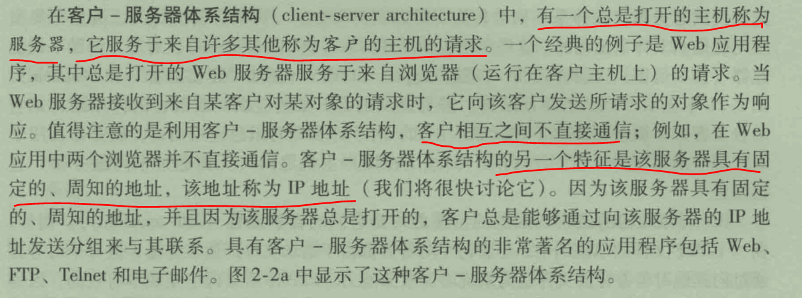
-
p2p结构: 对位于数据中心的专用服务器有很小或不需依赖，应用程序在间断连接的主机对之间使用直接通信，这些主机称为对等方。 目前许多流量密集型的应用都是P2P体系结构，例如文件共享、对等方协助下载加速器(迅雷等)。
也有应用是具有混合的体系结构。例如即时讯息应用，服务器被用于跟踪用户的IP地址，但用户和用户之间的报文在用户主机之间(无需通过中间服务器)直接发送。
网络应用进程通信
客户进程: 发起通信的进程； 服务器进程：等待通信请求的进程。
-
socket套接字: 应用程序和网络之间的应用程序编程接口; 因此进程通过socket向网络发送报文和接收报文。
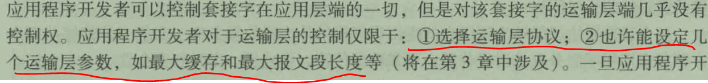 -
进程寻址:
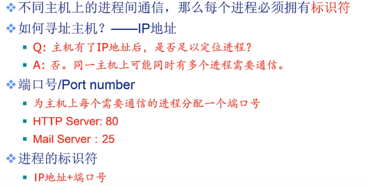 -
传输层协议提供服务: 可靠数据传输、吞吐量、定时(时延)、安全性(传输层协议能够加密发送进程传输的所有数据；也能在将数据交付给接收进程前解密数据，传输层还提供数据完整性和端点鉴别的安全性服务)。
Internet为传输层提供两个协议，其中TCP协议可以提供可靠数据传输和安全性(通过Secure Socket Layer实现)，但TCP和UDP均不提供吞吐量和时延的保证。 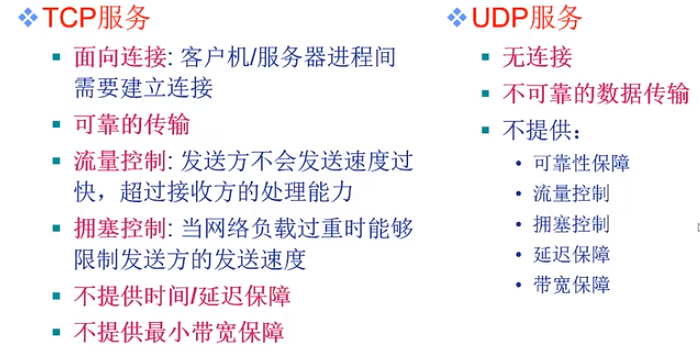 - 何谓“连接”
TCP通讯，通过三次握手，在客户端进程和服务器进程间建立一个长期连接， 保证两者之间的数据可以正确发送和接收，通过唯一的端口号，确保每次接收到来自同一个服务器的数据。 在客户端和服务器间传输数据时，两方需要维护连接的状态。
UDP通讯，并没有握手过程，每个客户端端口和服务器端口之间的连接是短期的， 并不保证发送的数据一定被接受到； 且每次向一个服务器端口发起申请，然后下一次可以向另外一个服务器端口申请接收数据； 因此一个udp服务器端口可以一段时间内接受多个客户端发送的请求， 一个客户端接口也可以短时间内接收多个服务端发来的数据。 - 应用层协议定义:
WEB应用
-
http:
web的应用层协议是HTTP(HyperText Transfer Protocol)协议；客户机和服务器运行在不同的端系统中，通过交换HTTP报文进行会话。HTTP定义了web客户向web服务器请求web页面的格式，以及web服务器向客户发送web页面的方式。
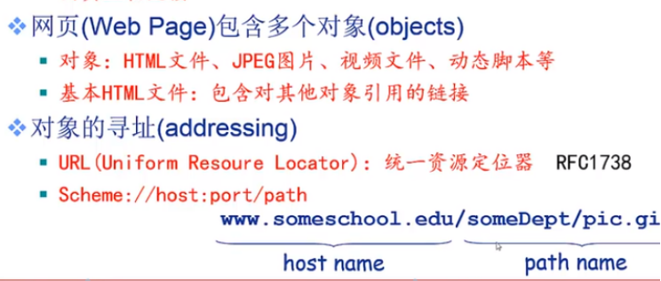
HTTP使用TCP作为传输层协议:
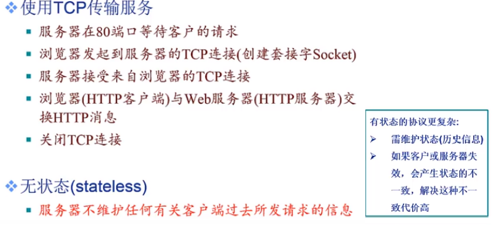 -
持久性连接和非持久性连接
非持久性连接: 每个个TCP连接只允许传输一个对象；
持久性连接: 每个TCP连接允许传输多个对象。
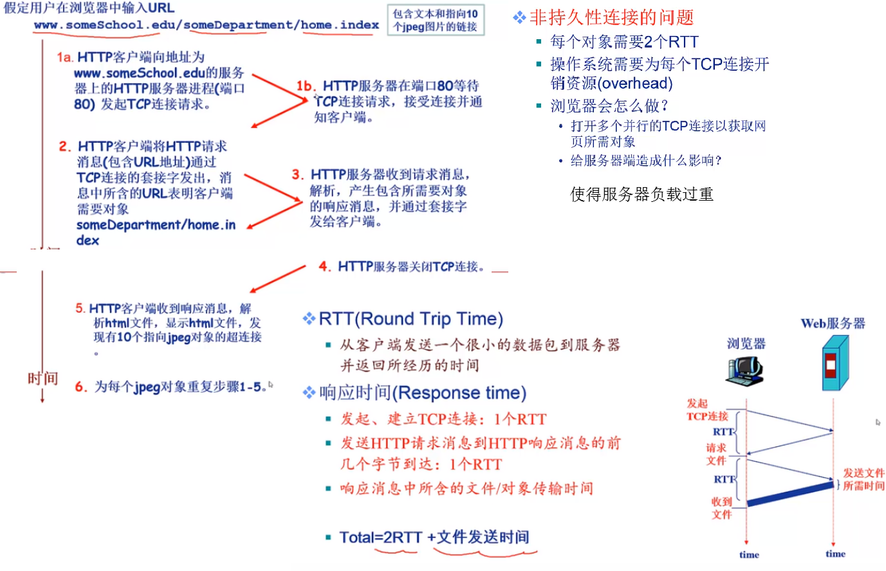
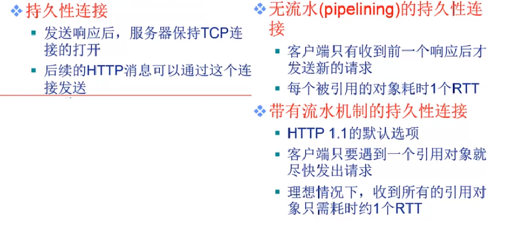 -
http消息格式:
HTTP有两种报文: 请求报文和响应报文
请求报文:
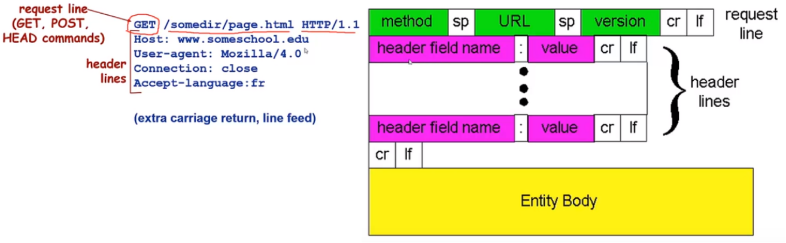请求报文由ASCII文本写成;
method
Host: xx, 指明了对象所在主机，该首部行信息是Web代理高速缓存所要求的; Connection:close, 告诉服务器不希望使用持续性连接，要求服务器在发送完被请求的对象后就关闭这条连接; keep-alive：表示使用持久性连接 User-agent, 指明用户代理，即向服务器发送请求的浏览器类型， 因此服务器可以有效地为不同类型的用户代理实际发送相同对象的不同版本(每个版本都由相同的URL寻址); Accept-lanuage, 用户期望得到的对象的语言版本，如果没有，则服务器会发送默认版本。
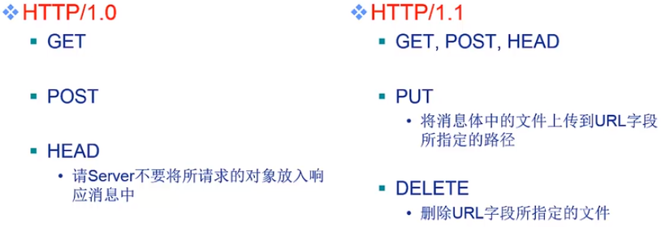get: 从服务器获取资源，如静态文本、图片、视频等，浏览器可以对get请求的数据进行缓存； get请求可以将参数(querystring)通过URL传递，且请求参数是可见的；
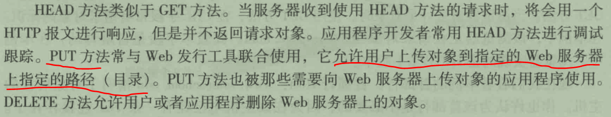 响应报文:
post: 提交表单, 向服务器传输资源，表单数据被编码在报文的body中； post一个表单时，url也可以带上参数，但需要提供querystring post请求返回的资源不可以被缓存，post请求也不能作为书签保存
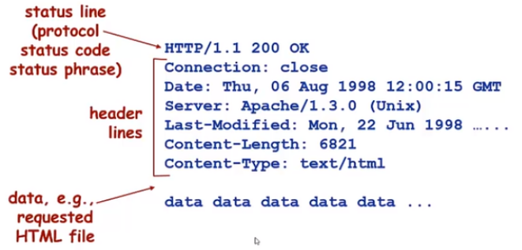
状态码:200 OK是最常⻅的成功状态码，表示⼀切正常。如果是⾮HEAD请求，服务器返回的响应头都会有body数据. 204 No Content也是常⻅的成功状态码，与 200 OK 基本相同，但响应头没有 body 数据. 206 Partial Content是应⽤于 HTTP 分块下载或断点续传，表示响应返回的 body 数据并不是全部资源， ⽽是其中的⼀部分，也是服务器处理成功的状态。
entity body包含了所请求对象本身; content-type 指示了entity中对象的类型。
301 Moved Permanently,永久移动。请求的资源已被永久的移动到新URI，返回信息会包括新的URI， 浏览器会自动定向到新URI。今后任何新的请求都应使用新的URI代替. 302 Found,临时移动。与301类似。但资源只是临时被移动。客户端应继续使用原有URI. 304 Not Modified,未修改。所请求的资源未修改，服务器返回此状态码时，不会返回任何资源。 客户端通常会缓存访问过的资源，通过提供一个头信息指出客户端希望只返回在指定日期之后修改的资源. 305 Use Proxy,使用代理。所请求的资源必须通过代理访问.
400 Bad Request 客户端请求的语法错误，服务器无法理解. 401 Unauthorized,请求要求用户的身份认证. 403 Forbidden, 服务器理解请求客户端的请求，但是拒绝执行此请求. 404 Not Found, 表示请求的资源在服务器上不存在或未找到，所以⽆法提供给客户端. 405 Method Not Allowed 客户端请求中的方法被禁止.
501 Not Implemented 服务器不支持请求的功能，无法完成请求 502 Bad Gateway 作为网关或者代理工作的服务器尝试执行请求时，从远程服务器接收到了一个无效的响应 503 Service Unavailable 由于超载或系统维护，服务器暂时的无法处理客户端的请求。 504 Gateway Time-out，充当网关或代理的服务器，未及时从远端服务器获取请求 505 HTTP Version not supported 服务器不支持请求的HTTP协议的版本，无法完成处理 -
http发展
http1.0采用的是非持续性连接，每个TCP连接只允许传输一个对象； http1.1默认采用的是持续性连接(也称长连接，请求报文中的首部信息connection默认为keep-alive)， 每个TCP连接允许传输多个对象，同时使用管道技术(称为Pipelining，也称作流水线)， 在等待上一个请求响应的同时，发送下一个请求，而在发送过程中不需要等待服务器对前一个请求的响应。 http1.1缺点: http1.1规则规定，服务器端在响应时，要严格按照接收请求的顺序发送响应，即先接收到的请求， 需要先发送其响应，客户端也是如此，接收响应的顺序要按照自己发送请求的顺序。 因此如果服务器收到的第一个请求，需要很长的处理时间，则对于后面已经处理完响应的请求来说， 它们只能阻塞等待，等待前面的响应发送完后，才能被发送出去，造成了“队首阻塞”问题。 可见队首阻塞发生在服务器端。因此客户端在需要发起多次请求时，通常会采用多个TCP连接来减少延迟。 (不同浏览器允许的最大并发连接数是不同的) 此外还有只能客户端单向 向服务器发起请求获得响应、请求报文与响应报文首部信息冗余量大， 并且未采用数据压缩，导致传输量大。
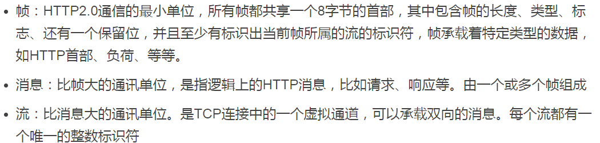 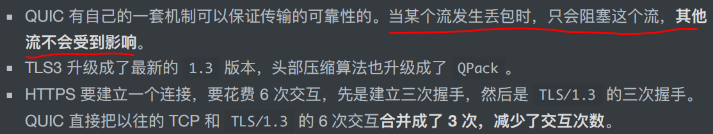 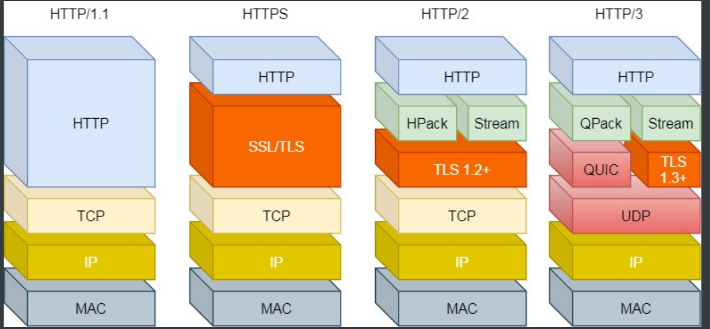
http2.0改进: 二进制分帧: 不同于http1.x中通过文本的形式传输数据，http2.0引入新的编码机制， 将所有传输的信息分为更小的消息和帧，采用二进制格式编码，组成二进制帧层 其中HTTP1.x的首部信息会被封装到Headers帧，而Request Body则封装到Data帧。 因为每个帧都有编号，二进制帧数据流可以到达另一端后再根据帧的编号进行组装。 多路复用: 允许同时通过单一的TCP连接发起多重的请求-响应消息， 原因:二进制帧在客户端和服务器端的TCP连接上是以字节流的方式双向传输的，由于编码和封装方式，不同的帧互不干扰， 因此可以并行发送多个交错请求和响应，实现了管道多路复用；只要当前TCP连接可用，就可以发送请求和响应， 消除了HTTP/1.1中请求和响应顺序对应的关系。 头部压缩: 采用HPACK算法对header信息进行压缩编码，提高带宽利用率。 具体为: 如果同时发出多个请求，它们的头是⼀样的或是相似的，那么协议会消除重复的部分。 HPACK使用2个索引表(静态、动态索引表)来把头部(包含header name和header value)映射到索引值， 并对不存在的头部使用 huffman 编码，并动态缓存到索引，从而达到压缩头部的效果。 静态索引表: 预先定义好的内容，只有固定的几十个值，如果要发送的值符合静态表时，用对应的 Index 替换即可. 动态索引表:是一个由FIFO队列维护的有空间限制的表，同样维护的是头部与对应的索引。 每个动态表只针对一个连接，每个连接的压缩解压缩的上下文有且仅有一个动态表。 当一个头部没有出现过的时候，会把它插入动态表中，下次同名的值就可能会在表中查找到索引并替换掉头部。 服务器推送: 为了改善延迟，HTTP2.0引入了server push，它允许服务端主动推送资源给浏览器， 例如在浏览器刚请求 HTML 的时候，服务器就提前把可能会⽤到的 JS、CSS ⽂件等静态资源主动发给 客户端，减少等待时间。 http2.0缺点: 多个HTTP请求在复⽤⼀个TCP连接，下层的TCP协议是不知道有多少个HTTP请求的。 所以⼀旦发⽣了丢包现象，就会触发TCP的重传机制，这样在⼀个TCP连接中的所有的HTTP请求 都必须等待这个丢了的包被重传回来。
http3.0: 又称为HTTP Over QUIC，其弃用TCP协议，改为使用基于UDP协议的 QUIC(Quick UDP Internet Protocol)协议来实现. 如何处理丢包: 前向纠错: QUIC协议的每个数据包除了本身的数据以外，会带有其他数据包的部分数据，在少量丢包的情况下， 可以使用其他数据包的冗余数据完成数据组装而无需重传，从而提高数据的传输速度。 快速重启会话: 普通基于tcp的连接，是基于两端的ip和端口和协议来建立的。在网络切换场景，例如手机端切换了无线网， 使用4G网络，会改变本身的ip，这就导致tcp连接必须重新创建。而QUIC协议使用特有的UUID来标记每一次连接， 在网络环境发生变化的时候，只要UUID不变，就能不需要握手，继续传输数据。 -
cookie
cookie可以用于标记一个用户，用户首次访问一个站点时，可能需要提供一个用户标识，在后继会话中，浏览器向服务器传递一个cookie首部，从而向该服务器标识了用户。因此cookie可以在无状态的http之上建立一个用户会话层。
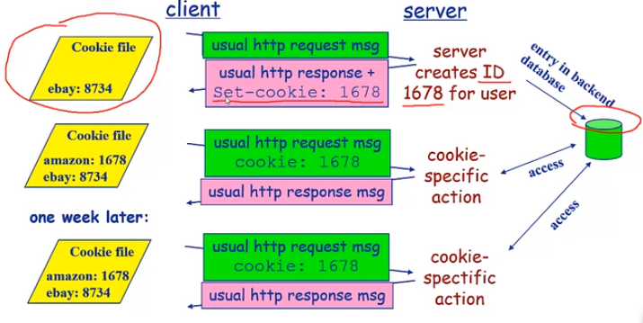 -
Web缓存/代理服务器技术
在不访问服务器的前提下满足客户端的HTTP请求，web缓存器有自己的磁盘存储空间，并在存储空间中保存最近请求过的对象的副本。
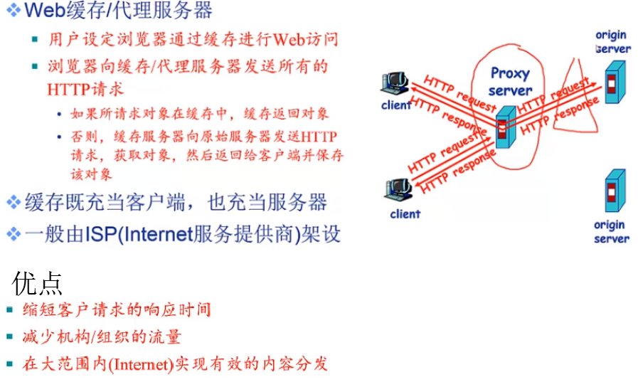
为了确保缓存服务器中的对象是最新的，HTTP提供了条件GET方法。 缓存服务器在将对象转发到请求的浏览器的同时，也在本地缓存了对象，并且存储了该对象的最后修改时期。
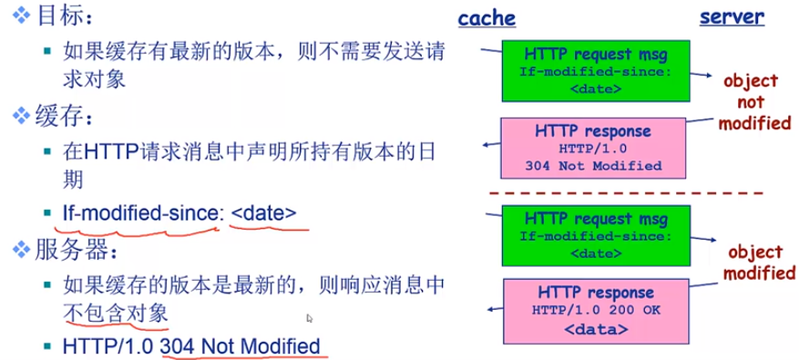
文件传输协议(FTP)
- 连接过程
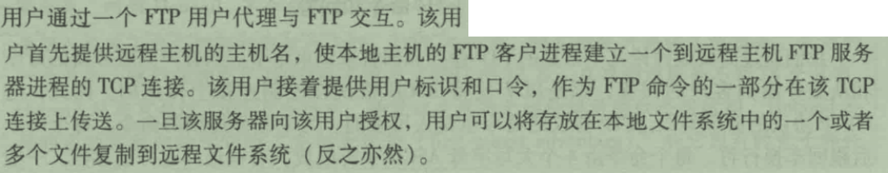 - 与HTTP区别
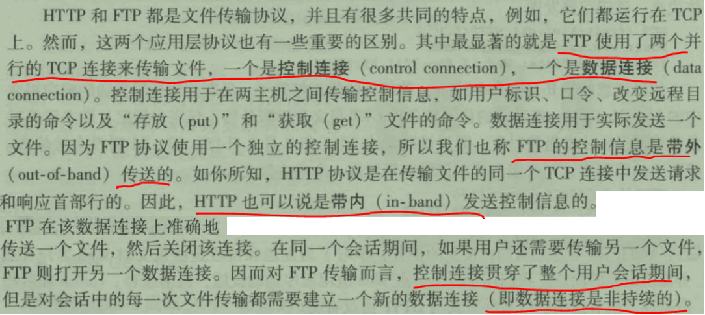
Email应用
-
Email应用组成与SMTP
SMTP: Simple Mail Transport Protocol(简单邮件传输协议)
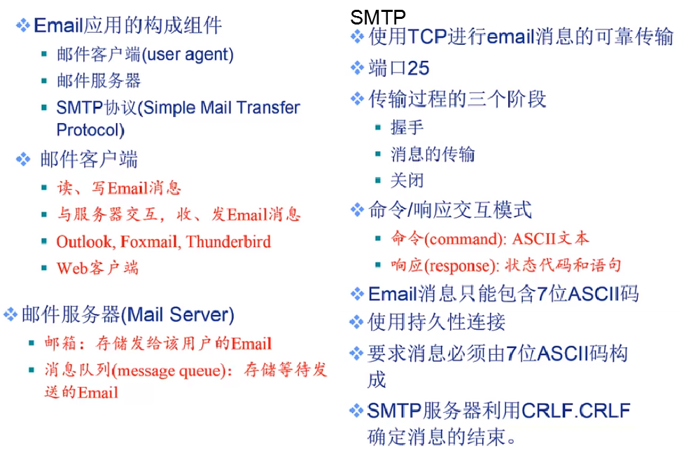 -
SMTP与HTTP不同
HTTP is a pull protocol, 即用户使用HTTP从服务器上拉取信息，TCP连接是由接收方发起的； SMTP is a push protocol, 即发送邮件服务器把文件推向接收邮件服务器， TCP连接是由发送方发起的。
SMTP报文使用7bit ASCII格式，HTTP不受此限制。
在处理包含多个对象时(如包含文本和图片的文档)，HTTP会把每个对象封装到各自的HTTP响应报文中，而SMTP则把所有报文对象放在一个报文中。 -
邮件访问协议
邮件传输过程: 发送方用户代理->发送方邮件服务器->接收方邮件服务器->接收方用户代理
采用发送方邮件服务器作为中继，通过消息队列，存储发送方发出的邮件，可以避免接收方邮件服务器不在线时，直接通过用户代理，无法到达接收方；发送方邮件服务器会定时查询连接，一旦连接，就将邮件传输到接收方服务器。
传输过程的前两部分采用SMTP协议，而最后一部分不能采用SMTP协议，因为只能由用户代理主动接收邮件，而这是一个pull动作，需要通过邮件访问协议来从接收方服务器接收邮件。
POP3(Post Office Protocol v3)协议: authorization(验证用户名和口令)、事物处理(取回报文即邮件，对报文添加删除标记)、更新(会话结束，邮件服务器删除被标记为删除的报文)。
IMAP(Internet Mail Access Protocol)协议 以及 HTTP协议(如web mail, 浏览器充当用户代理，通过HTTP与服务器通信，不过邮件服务之间仍是通过SMTP协议)。 -
MMIE
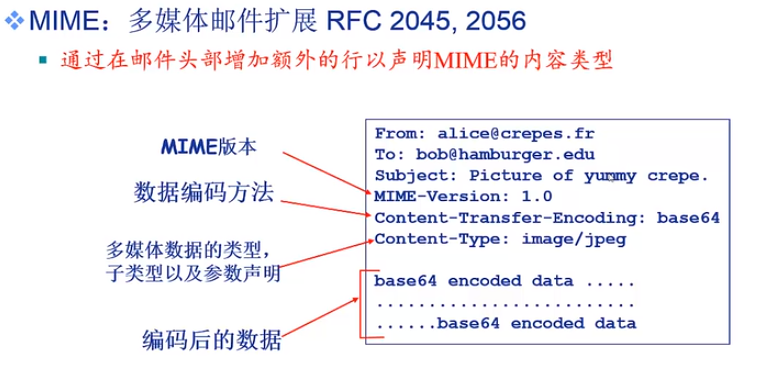
DNS(Domain Name System)
指一个由多层域名服务器构成的分布式数据库，采用集中式DNS缺点: 单点失败(即若唯一的DNS服务器故障，则整个INTERNET将崩溃)、流量问题(高并发查询)、距离问题(单个DNS server不可能邻近所有查询客户)、维护性问题(单一数据库维护和更新巨大的查询记录)。
也指一个使得主机能够查询分布式数据库的应用层协议(DNS协议)。
DNS协议完成Internet核心任务，将域名映射为IP地址。 运行在UDP上，使用53号端口。
-
DNS服务
域名解析、主机别名、邮件服务器别名、负载均衡。
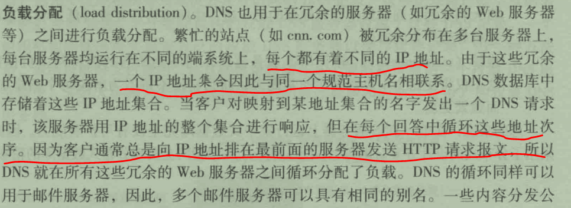 -
查询 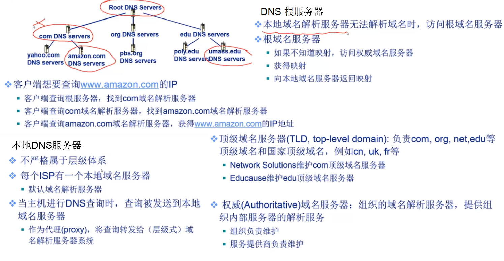
迭代查询和递归查询
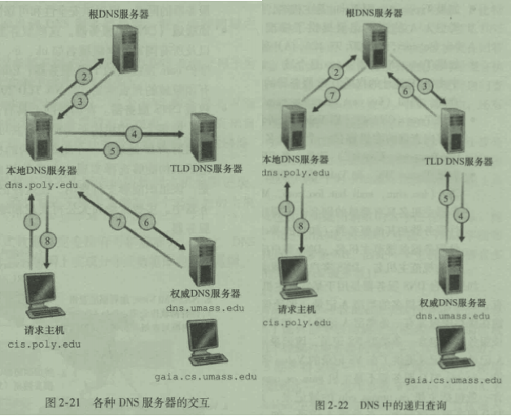 -
DNS缓存
只要DNS服务器接收一个DNS回答(域名-IP的映射)，即缓存该回答；一段时间后，缓存条目会失效(被删除)；本地DNS服务器一般会缓存顶级域名服务器的映射，因此DNS 根服务器很少被访问。 -
DNS记录和报文
TTL代表该记录的生存时间，它决定了资源记录(Resource Record)应当被删除的时间 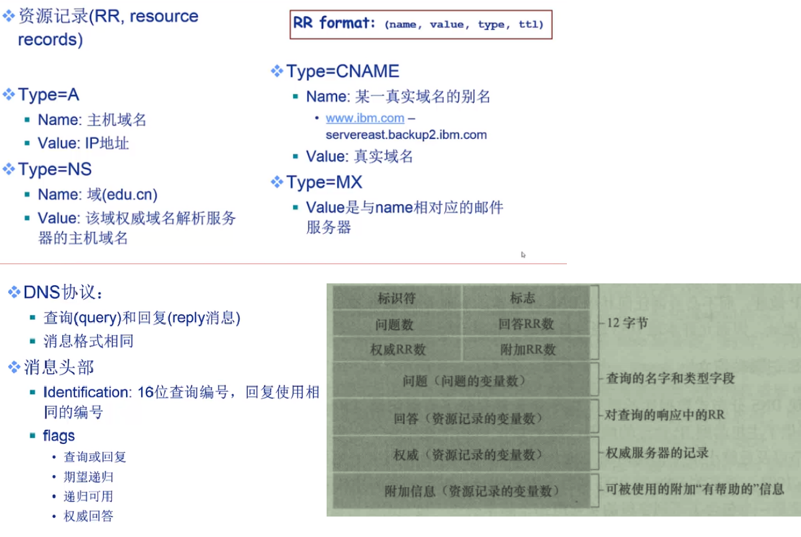
P2P应用
-
结构特点
-
P2P索引 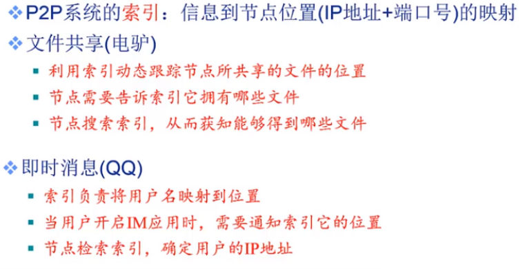
索引结构
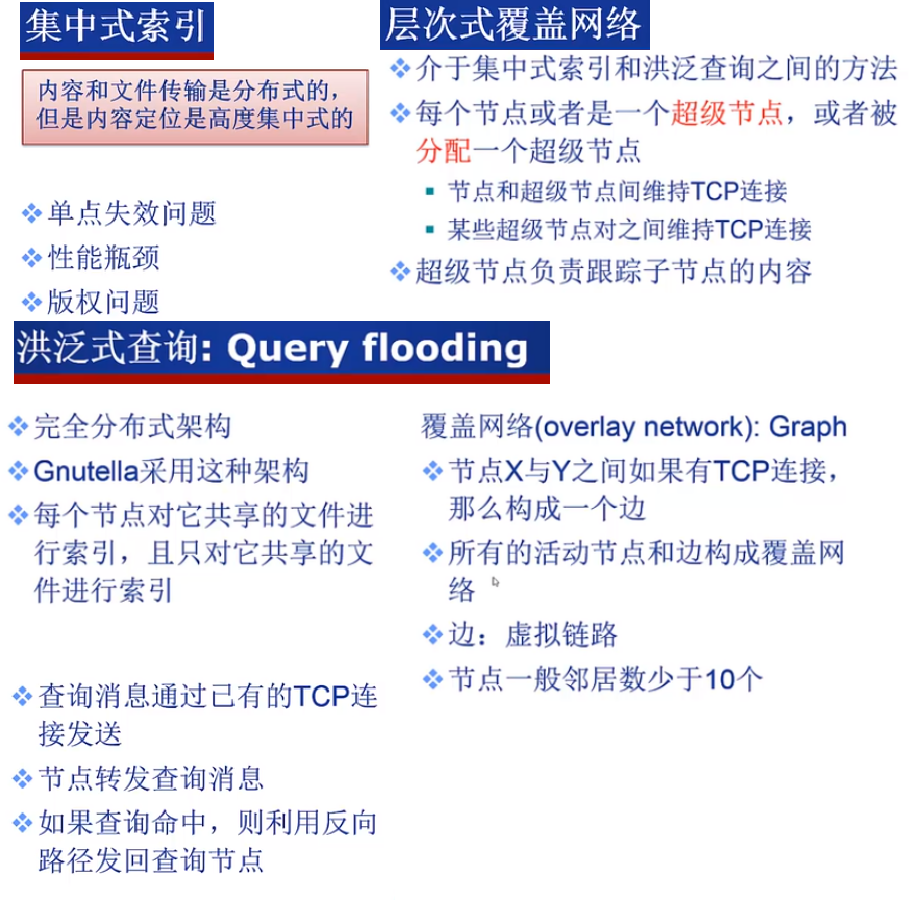
socket编程基础
-
socket
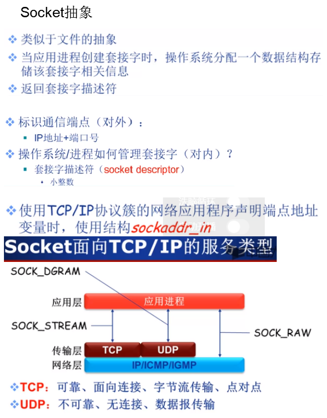 -
socket API函数 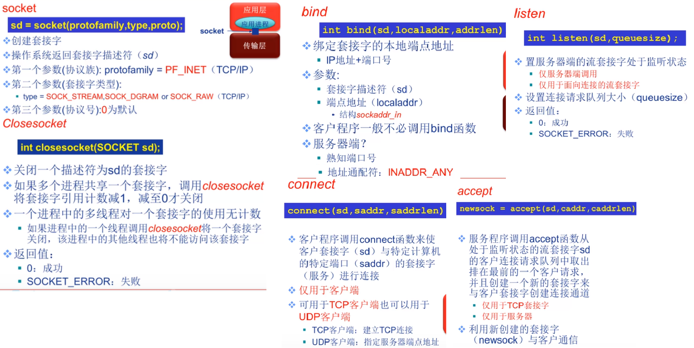
-
客户端/服务器端 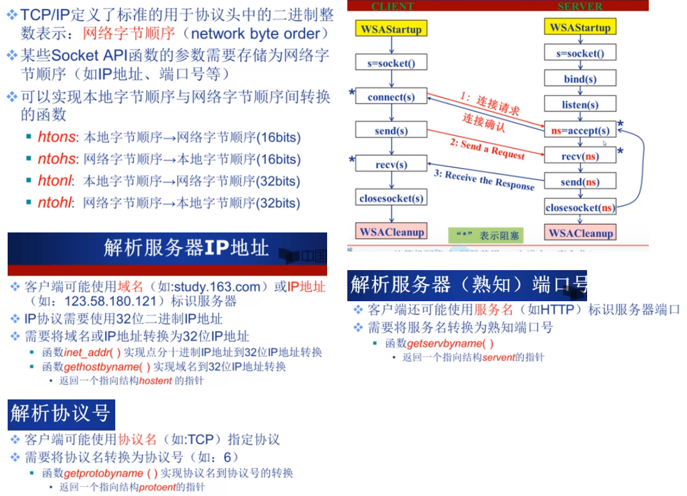 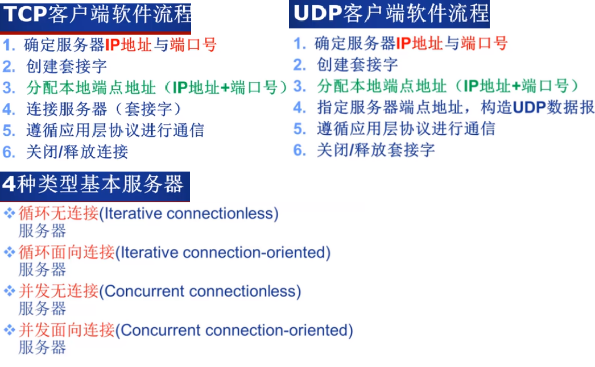 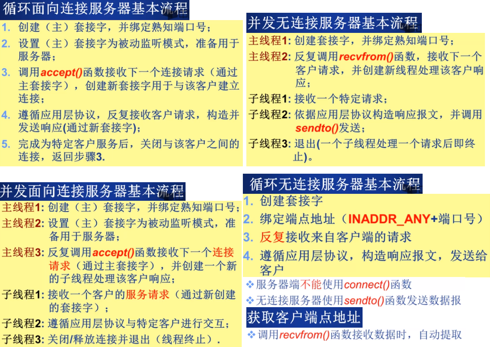